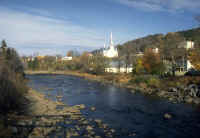
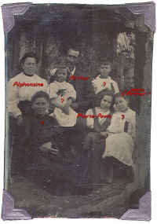

|

LA MÈRE DE MARIE-ANNA
|
|
 Alphonsine Gagnon naît à
St-Pacôme, près de Kamouraska, le 26 août 1869. Elle est baptisée le
même jour dans la paroisse Rivière-Ouelle. Son parrain est Joseph
Gagnon et sa marraine Léa Pelletier. Il est mentionné sur son acte de
naissance que son père est journalier.
Elle est la dernière des
quatorze enfants de François Gagnon et d'Ombéline
Dionne.
Alphonsine a cinq ans au décès de sa mère Ombéline.
La famille habite le
bas du fleuve
depuis plusieurs générations. Mais, au recensement de 1881, nous
retrouvons François Gagnon, veuf, à Chicoutimi. Son métier est
journalier, et il y vit avec quatre de ses filles, dont Alphonsine, 12
ans.
|
|

Nous ne savons pas quand, ni
pourquoi, Alphonsine s'installe
à Montréal. Plusieurs de ses
frères et sœurs ont plutôt choisi la région de
Chicoutimi.
 Alphonsine épouse, le 12 octobre 1891, Arthur
Caron, dans la paroisse St-Charles de Montréal. Alphonsine épouse, le 12 octobre 1891, Arthur
Caron, dans la paroisse St-Charles de Montréal.
Arthur est né le 16 août
1867 à St-Jean-Port-Joli. Il y est baptisé le 18, son parrain est
Frédéric Bertin, marin, et sa marraine Marie Leclerc. Son père Joseph
Caron, journalier, et sa mère Geneviève Anctil se sont mariés le 6
novembre 1866 à St-Jean-Port-Joli. Ce sont deux veufs qui se remarient et
qui ont déjà des enfants. La mère d'Arthur avait épousé en 1852 un
Cyrille Avoine. Aussi, Arthur a au moins deux demi-sœurs connues, Louise
et Georgianna Avoine, inhumées dans le lot des Caron au cimetière
Notre-Dame-des-Neiges.
Alphonsine et Arthur ont trois
enfants: Jean, né le 11 octobre 1893, Marie-Anna née le 27 avril
1897 et Antonio né le 26 octobre 1899. Un quatrième enfant, Arthur, né le 22 février 1901, est inscrit lors
du recensement de 1901. Sans doute décède-t-il en bas âge car nous
n'avions jamais entendu parler de cet enfant jusqu'ici.
Les Caron habitent St-Henri.
À partir de 1900 on trouve, dans l'annuaire de rues Lovell*, un "Arthur
Caron, 54 Delinelle, St-Henri, tinsmith". Arthur exerce donc le
métier de ferblantier.
 Arthur décède le 31 octobre 1904 à l'âge de 38 ans. Il est
inhumé dans le cimetière Notre-Dame-des-Neiges. Un an plus tard son
corps est transféré dans le lot K297 du même cimetière. Clara Caron,
épouse de John Alexander, achète ce lot et le destine à la famille
Caron, Avoine et leurs conjoints. Clara, née le 8 octobre 1868 à
St-Jean-Port-Joli, est la petite sœur d'Arthur, et la marraine de
Jean-Noël Charette. Elle décède en1948, huit ans après son époux.
La
photo ci-contre, à supposer que l'homme au centre soit bien Arthur, a sûrement été prise peu de temps avant sa mort puisque
Marie-Anna y a environ 8 ans.
On y reconnaît Alphonsine,
Arthur (?) et Marie-Anna. Cette dernière semble très attachée à une autre petite fille, peut-être
une cousine. Les trois autres enfants se ressemblent.
La vieille dame qu'on entrevoit à l'extrémité droite est peut-être la
mère d'Arthur, Geneviève Anctil St-Jean, car la mère d'Alphonsine est
morte depuis longtemps. Geneviève décède le 17 décembre 1910.

|
|

Veuve, Alphonsine continue d'habiter le
54 Delinelle, St-Henri, à l'intersection de la rue Ste-Émélie. Dans
les annuaires de rues Lovell* de 1905 à 1913, on y retrouve
"Mrs Alphonsine Caron wid Arthur". C'est par le
recensement de 1911 que nous apprenons les moyens de subsistance
d'Alphonsine. Elle déclare comme métier
"laveuse pour des
particuliers".
Autrement dit, elle lave chez-elle le linge des autres, elle l'empèse
si nécessaire, et elle le repasse. Sa clientèle doit être des
célibataires, des gens mieux nantis du quartier ou de Westmount, tout
en haut de St-Henri. Les buanderies commerciales ne voient le jour que
la décennie suivante. Dans le même recensement, nous apprenons aussi
que Jean, le fils aîné, 17ans, a comme métier
"chartier".
Il travaille 60 heures par semaine, 52 semaines par année, et il a
gagné 350$ l'année précédente. La majeure partie de cet argent est
sûrement remise à sa mère, comme le veut la coutume de cette époque.
Alphonsine épouse en
secondes noces, le 13 septembre 1913 dans la paroisse St-Zotique, Zénon Laframboise, veuf depuis
peu. Elle le connaissait sans doute depuis quelques années car Zénon,
sa femme Célina Jasmin et sa fille Marguerite, née en février 1900,
habitaient tout près, au 455 rue Ste-Émélie, depuis au moins
1908. Au recensement de 1911, le métier inscrit pour Zénon est
menuisier.
Alphonsine et ses enfants
emménagent dans le logement de Zénon, au 455 Ste-Émélie, et ce
jusqu'en 1922.
Selon l'annuaire Lovell*, la famille Zénon Laframboise déménage
au 457A Ste-Émélie de 1922 à 1924. Puis la famille se réinstalle de
nouveau au 455 Ste-Émélie.
En 1926, ils déménagent à nouveau, au 178 Allard, près de l'église
St-Jean de Matha, et de l'école Dollard Desormeaux, entre les rues
d'Aragon et Dumas. Durant toutes ces années, le métier de Zénon
inscrit dans l'annuaire est "mach", c'est-à-dire machiniste. Deux
fois on mentionne un employeur "Simmons Ltd".
C'est Zénon qui assume donc le
rôle de père auprès de Jean, Marie-Anna et Antonio Caron. Seule
Marie-Anna aura à son tour des enfants et Zénon deviendra leur
grand-père, le seul qu'ils connaîtront. Gérard Charette se rappelait
bien de "grand-père Laframboise". L'hiver il promenait
les enfants dans une petite carriole tirée par un poney, au grand
plaisir de ces derniers.

On voit ici Gérard (3 ans) au premier plan,
l'hiver 1925, à Montréal.
|
|
Famille d'Alphonsine Gagnon et Zénon Laframboise vers
1917

2ème rangée: Antonio Alphonsine Zénon Jean
1ère rangée: Rosario Charette
(époux de Marie-Anna), Marie-Anna, Marguerite (fille de
Zénon), Hélène(Nelly) Villemaire (épouse de Jean).
|
|
Alphonsine et Zénon
voyagent souvent avec Marie-Anna et Rosario. Ils semblent se rendre
chaque année au Saguenay, plus particulièrement à Chicoutimi.
Alphonsine y a plusieurs sœurs et frères. Considérant l'état des
routes de l'époque, c'est tout de même un grand voyage, dont une
partie se fait en traversier.
Marguerite
Laframboise, bonne amie de Marie-Anna, se marie le 7 mai 1923 avec un
veuf, Aldéric Pelletier. Ce dernier a des enfants, dont une fille
Adrienne qui s'est elle-même mariée, le 18 novembre précédent, avec
Henri Éthier.
|
|

Alphonsine et Thérèse, 1919
|

Thérèse et Zénon, 1919
En traversier sur le Saguenay
|
|

Chez des parents à Chicoutimi,
1919

Thérèse et Marie-Anna, 1919
|

Autos attendant le traversier, vers 1920

De gauche à droite: Alphonsine, Thérèse, Benoît, Marie-Anna et Lydia
Bédard, une cousine de Marie-Anna, 1921
|
|
En 1928, la
municipalité change la numérotation des adresses, le 178 Allard
devient le 2725 Allard.
Alphonsine
décède le12 octobre1929 . Zénon
Laframboise, machiniste, continue d'habiter le logement du 2725 Allard
jusqu'en 1937. Cette année-là il déménage au 6879 Dumas, pas très
loin de l'intersection de la rue Allard.
Zénon décède en 1937 ou 1938. Dans l'annuaire Lovell* de
1938-1939 nous trouvons "Laframboise Mrs E wid Z et Belisle Miss
E 6879 Dumas".
Pour 1939-1940, on trouve "Laframboise
Mrs Ern wid Zénon 6879 Dumas".
Conclusion: Zénon n'aimait pas vivre seul. Veuf
d'Alphonsine, il s'est remarié une troisième fois avec une dame
Ernestine Belisle. Cette dernière vivait avec sa fille ou sa sœur...
*
Les annuaires Lovell couvrent du 1er juillet d'une année au 30 juin de
l'autre. Les données sont récoltées de porte en porte en mai. Dans
certains annuaires les propriétaires sont identifiés par un astérisque.
Le métier est souvent inscrit, ainsi que l'employeur. On peut faire des
recherches par le nom de la personne, ou par l'adresse. Ils sont
disponibles sur le site des Archives
Nationales.
|
|

De gauche à droite: Marie, Henriette,
Alphonsine.
Cette photo ci-dessus nous
montre trois des quatorze
enfants de
François Gagnon et d'Ombéline Dionne.
 Marie est la douzième enfant.
Baptisée le 1er
octobre 1865 à St-Pacôme, elle épouse Salomon Bédard en 1886 et
décède à Montréal le 12 septembre 1928.
Marie est la douzième enfant.
Baptisée le 1er
octobre 1865 à St-Pacôme, elle épouse Salomon Bédard en 1886 et
décède à Montréal le 12 septembre 1928.
Henriette est la sixième enfant.
Baptisée le 6
janvier 1857 aux Trois-Pistoles, elle épouse Jean-Baptiste Daigneault et
décède à Montréal le 12 mars 1942.
Alphonsine est la quatorzième enfant.
Baptisée le
25 août 1869 à St-Pacôme, elle épouse Arthur Caron, puis Zénon
Laframboise. Elle décède à Montréal le 12 octobre 1929.

Fin
de la rubrique sur Alphonsine. |
|